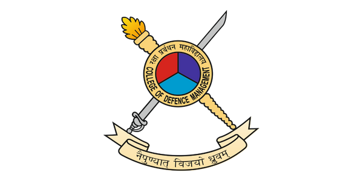

"We will build an industry with room for everyone - public, private, and foreign firms. A strong Indian defence industry will not only make India more secure, but it will also make India more prosperous."
-Shri Narendra Modi, 2015India remains outside the top 20 arms exporters in the world. The domestic defence industry faces several challenges which hinder India's pursuit of self-reliance and export orientation. These challenges range from limited R&D, limited privatisation, over-reliance on OFBs and DPSUs, delays by DRDO and procedural delays in policy formulation. However, a definite upswing is driven by robust policy initiatives by the Indian Government. The transformation of the Indian defence industry has been multifaceted and driven by various factors, including geopolitical shifts, technological advancements, and policy reforms. India aims to transform the defence ecosystem from a 'net spender' to a 'net contributor' towards national revenue. Many lessons from other nations, i.e., the USA, Israel, South Korea and China, have been factored into the Indian defence industry model. India needs to harness key emerging technologies. The Government of India must remain steadfast in its defence export philosophy and continue supporting its goals.
When the Indian Air Force C-17 Globemaster landed in the Philippines on 19 April 24, it delivered India's first significant export order worth USO 375 million. India's BrahMos Aerospace Private Limited (BAPL) signed a contract with the Department of National Defence of the Republic of the Philippines in January 2022 to supply a Shore-Based Anti-Ship Missile System.
Indian defence exports have touched a record of Rs 21,083 crore (approx US $2.63 billion) in the financial year (FY) 2023-24, with a growth of 32.5% over the last fiscal year when the figure was Rs 15,920 crore. The recent statistics indicate that the defence exports have grown by 31 times in the previous ten years as compared to FY 2013-14. The private sector and the DPSUs have contributed about 60% and 40%, respectively.
Since World War II, many countries have leveraged rising investments and exports. China, Malaysia, Thailand, Japan, and South Korea are examples of economies where vigorous export initiatives and outcomes assumed a significant part in their economic upsurge. It is relevant to emphasise that export promotion, rather than import substitution, drove development.
The transformation of the Indian defence industry has been multifaceted and driven by various factors, including geopolitical shifts, technological advancements, and policy reforms. An overview of some of the initiatives implemented to transform from a 'net spender' to a 'net contributor' towards national revenue is discussed in the succeeding subparagraphs: -
Policy Initiatives & Reforms. At the core of the policy initiatives is the Defence Production and Export Promotion Policy (DPEPP) 2020, which sets agendas and targets for defence production and exports. The Government aims at a robust domestic manufacturing framework focused on indigenous production of defence equipment to reduce import dependency and enhance self-reliance. The Government has also released multiple instruments aimed at achieving the US $5 billion target for defence exports by 2025.
Strategic Partnerships. Many Strategic Partners have been identified to collaborate with foreign original equipment manufacturers (OEMs) to produce critical defence platforms such as submarines, fighter jets, helicopters, armoured vehicles and weapons. The approach aims to build domestic capabilities through joint ventures and technology transfer agreements.
Technology Development. The Defence Research and Development Organisation (DRDO) develops cutting-edge defence systems and collaborates with academic institutions and international partnerships.
International Collaboration. Joint ventures and technology transfer agreements with Russia, Israel, France and the United States have helped enhance India's defence capabilities.
Export Orientation. Efforts are being made to promote defence exports through initiatives like the Defence Export Strategy and participation in international defence exhibitions.
Modernization of Armed Forces.Investments in state-of-the-art equipment, platforms, and systems aim to enhance operational capabilities.
Studying and drawing lessons from countries that have successfuIly developed robust defence industrial bases is essential to energise a nation's defence industry ecosystem and meet ambitious export aspirations. To uncover best practices and strategic insights that can inform policy recommendations for energising India's defence industry ecosystem, the defence industry models of a few nations that have established themselves as significant players in the global defence market, e.g. USA, South Korea, Israel, and China are discussed below:-
lsrael. In the 1930s, Israel possessed a few military factories, and in 1933, these workshops merged to become Israel Military Industries (IMI). An independent defence industrial sector was created to meet the needs of the Israeli military. About 70% of businesses are in the governmental sector, including IMI, IAI and Rafael, while 30% are in the private sector. 70% of Israeli defence sector output is intended for export. The key initiatives that transformed Israel's defence industry were establishing cutting-edge defence-focused R&D centres, upgrading the educational system at colleges and government research facilities to foster the growth of a highly educated populace and a broad knowledge base, enhancing defence spending to at least 4% of the GDP, establishing a permissive export policy, advancing from moderate to specialised technology and establishing positive ties with technologically sophisticated countries like the USA, France to gain access to specialised technology.
South Korea. The Korean War, which lasted from 1950 to 1953, left South Korea with traumatic memories. To strengthen national defence, the government implemented many initiatives:-
United States. The USA defence industry is extensive, multi-layered and interconnected worldwide. The USA's ability to create complex systems and systems of systems is the basis of its long-lasting superiority over other countries. The United States spends around 2.5% of its GDP annually on R&D, which has become the cornerstone of US technical innovations. The USA model provides insights into how a mature and diversified defence industry can drive exports and contribute to national security. A few important takeaways from the USA model are as follows: -
China. Since gaining its independence, China has consistently attempted to produce weapons and other military equipment to achieve self-sufficiency by whatever means possible. Their internal R&D, production, joint ventures, reverse engineering, and imports are all used in their modernisation effort. China's strategy of leveraging its industrial base and state-controlled enterprises to achieve global defence market penetration suggests some essential takeaways: -
The Indian defence industry is a multi-agency, multi-frontal entity. A comprehensive system approach is essential for the same. Only 16- l 7% of India's GDP is contributed by the industrial sector, which employs roughly 12% of the labour force. The Government's 'Make in India' strategy, which seeks to expand manufacturing's contribution to GDP to 25%, appears to be appropriately focused. The Indian government has set the defence production target at US $25 billion by 2025. The Indian Government has expressed confidence that India will achieve Atmanirbharta in the defence sector by meeting the target of Rs l .75 lakh crore of defence production by 2025, including an export of Rs 35,000 crore. Key initiatives undertaken to achieve the set targets are listed below: -
Figure 2: Matrix Depicting Factors for Defence Industry & ExportsMake in India Initiative. Make in India, a robust policy-driven initiative by the Indian government launched on 25th Sep 2014, is an ambitious policy catalyst to boost companies, both nationally and internationally, to set up and manufacture their products within India. Since the introduction of the initiative, India emerged as the FDI powerhouse. The total amount of FDI inflows received during the last ten years (April 2014 -March 2024) was US$ 667.4 l billion.
Atmanirbhar Bharat. On 12th May 2020, the Prime Minister of India raised a clarion call to the nation, giving a kick start to the Atmanirbhar Bharat Abhiyaan (self-reliant India campaign), realising that self-sufficiency or self-reliance is the only path to progress and development. The mission encompasses the infusion of an economic package of 20 Lakhs Crores, aiming to drastically reduce import dependence and improve the overall excellence of Indian-made products so that these products enter the global manufacturing chain.
OAP 2020. In 2020, a new Defence Acquisition Procedure (DAP) was released by the Ministry of Defence (MoD). The objective of the DAP 2020 is to transform India into a global manufacturing hub and empower the Indian domestic industry through Make in India and similar initiatives.
Positive lndigenisation Lists. The Govt of India has introduced Positive lndigenisation Lists (PIL) wherein certain weapons and military hardware under development or which can be developed within the country are now banned from imports. The MoD has published four lists of PIL comprising 41 l items, and the fifth Positive lndigenisation List of the Department of Military Affairs (OMA) containing 98 items was also published in 2023. This policy is seen as a step by the Government to impose forcible indigenisation for specific products.
Corporate Model for Ordnance Factories. On 01 Oct 202l, the OFBs were dissolved, and seven DPSUs were created to govern 41 ordnance factories on a corporate model. This initiative aims to enhance accountability and efficiency.
Innovations and Startups. 'Innovations for Defence Excellence (iDEX)' is being vigorously pursued as a significant platform for start-ups to connect to the DRDO and the defence establishments and to develop new technologies and products in the next five years (i.e. 2021-2026).
Infusion of Foi. To boost the defence sector and increase the infusion of FDI, the government, in September 2020, revised the regulations and permitted FDI under the automatic route up to 74% and l 00% through the government route in any area where it is likely to provide access to contemporary technologies.
Promotion of MSMEs. As per the new government guidelines, cases with costs less than Rs l 00 Crores are reserved for MSMEs, provided at least two or more MSMEs are eligible to participate in the category. The revamped Credit Guarantee Scheme for MSMEs has also been announced in the Union Budget 2023-24 through an infusion of Rs 9000 crore.
Armed Forces Modernisation. The Ministry of Defence was allocated Rs 6.22 lakh crore in the Budget 2024-25, which is approximately 12.90% of the total Budget. The Indian government is committed to maximising combat capabilities and undertaking 3600 force modernisations, addressing the critical gaps.
Technology Development Fund. Corpus fund of Rs. l 00 Cr has been created under the Technology Development Fund (TDF) to enable Indian industries, especially MSMEs. The industry can get funding up to 90% of the project cost.
Defence Industrial Corridors. The Government has established two Defence Industrial Corridors (DICs) in the country, one in Uttar Pradesh called the Uttar Pradesh Defence Industrial Corridor (UPDIC) and the other in Tamil Nadu called the Tamil Nadu Defence Industrial Corridor (TNDIC), to attract more than Rs. l 0,000 crore (US $1.3 billion) in investment.
India remains outside the list of top 20 arms exporters globally and sadly remains the largest arms importer globally, which underlines the monumental challenge ahead. The domestic defence industry faces several challenges which hinder India's pursuit of self-reliance and export orientation. These challenges range from limited R&D, low level of technology, limited privatisation, over-reliance on OFBs and DPSUs, delays by DRDO, and procedural delays in policy formulation to meet the challenges. Some of the key challenges and measures to overcome these are as follows.
Key Emerging Technologies. These are new innovative or existing technologies with new applications superior in performance and efficiency. Emerging technologies in the fields of semiconductors, quantum computers, cyber, sensor design and development, communication networks, directed energy weapons, hypersonic weapons, space technologies, advanced materials and additive manufacturing, artificial intelligence (Al) and robotics, 5G, and blockchain are essential for the growth of a high-level technology-based defence industry ecosystem.
sector needs to capitalise on R&D initiatives. Handholding for making newer products, tax holidays for investments in niche technologies, and incentivising investments in R&D shall encourage the industry. Policymakers should factor in increased funding and enable government investment policies, generate trust between public and private stakeholders, and emphasise the ease of doing business with accountability.
Improving India's Position in the Global Innovation Index. India has been on a rising trajectory over the past several years in the Global Innovation Index (GIi), from a rank of 81 in 2015 to 40 in 2023. Enabling policies in promoting R&D on new and unique products includes incentivising competitions, social orientation towards technological innovations by highlighting the importance of science and technology as a social status, promoting innovation culture throughout the complete education cycle, promoting a business-friendly environment that facilitates the creation and growth of startups and innovative companies and promoting open innovation practices by providing platforms for crowdsourcing of development and sharing of ideas. These policies shall foster a more dynamic and collaborative innovation environment.
Bolstering the Start-up Ecosystem. Startups are the engines of innovation, deep technology and economic growth. However, navigating the initial stages can be challenging. Each deep technology startup works on a two-pronged approach to business, i.e. delivery of innovation to the market and continual research. The incubators should promote this model. Governments and private institutions can provide grants or invest in startup incubators that offer financial support during the initial stages. There is a need to give the startups shared workspaces, mentorship from experienced entrepreneurs and access to networks and potential investors. Tax breaks for startups during their initial growth stages to free up resources for reinvestment shall greatly assist.
Testing and Certification. Rigorous testing and certification processes are crucial for the quality and robustness of defence systems. While the Government has offered test facilities, proof ranges, field firing ranges, etc., they are usually unavailable due to limited windows and heavy, round-the-year commitments. A benign, supportive attitude of our testing and certification agencies is quintessential for encouraging indigenous development.
Academia. Initiatives to engage with academia in defence R&D are now visible from the private and public sector defence industry, which is well-synergised with the armed forces and the DRDO. This also requires an overarching organisation to coordinate the efforts. Academia can undertake fundamental research in critical areas. However, fundamental research is risk­ prone, time-consuming, and commercially less viable for nascent industries.
Defence Manufacturing and Export Base- Need of the Hour. A growing defence manufacturing and export base will have two clear benefits for the country. Firstly, the defence export revenue can be used to fund parts of the state's defence expenditure as well as to finance research and development (R&D) in the sector without compromising state expenditure in other developmental priorities. Secondly, a robust indigenous defence manufacturing and export capacity will be a force multiplier for national security, insulating India from disruptions in supply lines during times of conflict. Though India's export trajectory is on the rise, a considerable gulf remains between the US $5 billion target and the currentexportvalue of roughly US $2 billion. Meeting the benchmark will require a nearly two and half times cumulative increase in defence export revenue over the next two financial years. The Government of India must remain steadfast in its defence export philosophy and continue supporting its goals.
Whole-of-government approach. The whole-of-government approach is necessary in this VUCA (volatility, uncertainty, complexity, and ambiguity) environment. The Government incorporated the Ministry of External Affairs (MEA) to promote the country's defence exports, thus enlarging the ecosystem and framework for defence exports and pivoting towards a whole-of­ government approach. Indian embassies must significantly promote domestic military platforms and enhance the country's defence exports, providing an additional fillip.
Equity among Enterprises.There is a lack of equity between the DPSUs and private defence manufacturers regarding market share control. The majority of government­ backed large-scale arms contracts go towards the DPSUs. This, in turn, can reduce the ability of private manufacturers to be competitive in the defence export market . There is a need to institutionalise the dialogue mechanisms to bring equity among the enterprises. This can be achieved by creating formal platforms for regular dialogue between the government, DPSUs, and private industry. This will help identify and address challenges, align strategic objectives, and foster trust and collaboration. Further, the govt should leverage DPSU's capabilities for export-oriented manufacturing by utilising DPSU's infrastructure and expertise to support private manufacturers in producing export­ grade defence products. This can be done through leasing arrangements, shared facilities, or joint ventures.
Enabling Policies for Licensing and Certification.The Government must assist in liberalising industrial licensing and certification policies for defence manufacturers. Enabling policies for manufacturers to garner quick and efficient single-window clearances and long-term licenses and preventing delays and inefficiencies that inhibit production and exports is essential.
Although India's current capacity and capability are insufficient to achieve l 00% indigenisation and import substitution, it is heartening to note that the government has undertaken multi-faceted initiatives. India has made inspiring progress in a short time in building export­ oriented domestic defence manufacturing capacity. There is an increase in inter-departmental and inter­ ministry synergy, and the 'whole of the nation approach' appears to work. Meeting the objective of the US defence export of $5 billion by 2025 will require an upturn of nearly two and half times the current defence export revenue in the next two financial years. Notwithstanding some tough challenges, it would be justified to conclude that India has made inspiring progressive advances to strengthen the ecosystem for defence exports. India is successfully creating an environment enabling a practical conceptua I and institutional fromework to push this criticaI nationaI agenda of defence exports. This must be seen as work in hand, and India must continue ideating and implementing reforms to achieve its export targets and move into the top 20 defence exporters globally. It is critical for its economy and national security.
Aayog, N. (2023). India retains 40th rank in the Global Innovation Index. New Delhi: PIB. Retrieved from https://www.pib.gov.in/PressReleasePage.aspx?PRID=1961576
BIS, U. (2021). US Bureau of Industry and Security. Retrieved from bis.gov:https://www.bis.doc.gov/index.php/policy-guidance/multilateral- export-control-regimes
IDEX. (2024, August). https://idex.gov.in/. Retrieved from IDEX:https://idex.gov.in/
India Brand Equity Foundation. (2024). Foreign Direct Investment (FDI). https://www.ibef.org/. doi:June 24
MoD. (1 April 2024). Press Release. New Delhi: PIB. Retrieved from https://pib.gov.in/PressReleaselframePage.aspx?PRID=2016818PIB, 1 April 2024
MoD. (2022). Defence Industrial Corridor. New Delhi: PIB. Retrieved from https://pib.gov.in/PressReleasePage.aspx?PRID=1882702
MoD. (28 January 2022). New Delhi: PIB. Retrieved from https://pib.gov.in/PressReleasePage.aspx?PRID+1793209
PIB, 28 January 2022 Niti. (2021, June). https://www.niti.gov.in/exports-indias-window-opportunity-growth-future.
Niti Aayog Report. Retrieved from https://www.niti.gov.in:https://www.niti.gov.in
Pant, H. (2024, April). Observer Research Foundation. Retrieved from https://www.orfonline.org/: https://www.orfonline.org/research/indias- defence-exports-continuing-defence-reforms-is-critical
PIB. (2020). Press Release. New Delhi: PIB, MoD. Retrieved from https://pib.gov.in/PressReleasePage.aspx?PRID=1659746
PIB. (2023). MSME Credit Guarantee. New Delhi: MoD. Retrieved from https://pib.gov.in/PressReleaselframePage.aspx?PRID=1912500 PIB. (2024). Press Release MoD. New Delhi: PIB.
PIB. (October 23). Press Release. New Delhi: PIB. Retrieved from https://pib.gov.in/PressReleasePage.aspx?PRID=1964272
Singh, S. V. (2023). Policy Recommendations for Achieving India's Defence-Export Ambitions. ORF. Retrieved from https://www.orfonline.org/research/policy-recommendations-for-achieving-india-s-defence-export-ambitions#
Rajesh Basrur, Anit Mukherjee & TV Paul. (2019). India-China Maritime Competition- The Security Dilemma at Sea. New York: Routledge
General Manoj Kumar, SM, VSM, is a graduate of the Long Gunnery Staff Course, Defence Services Staff College, Higher Command Course and National Defence College. During his more than three decades of service, the officer has held various commands, staff and instructional assignments, including GS0-1 of an RR Sector, command of a Missile Sub Group, raising of a Missile Regiment and a strategic Base, Director at Strategic Programme Staff, command of an Artillery Brigade, Brigadier Public Information at ADGPI, Commander of Tactical Wing in School of Artillery and GOC of a Sub Area. He is currently posted as Commandant, Selection Centre East.
Brigadier (Dr) Anand Tewari (Retd), Professor and Director of Amity Institute of Defence and Strategic Studies, Amity University, is an accomplished geopolitical and Chinese affairs watcher. His book, 'Chinese Geopolitics in the 21st Century: A Post-Pandemic Perspective,' exemplifies his insight into China.